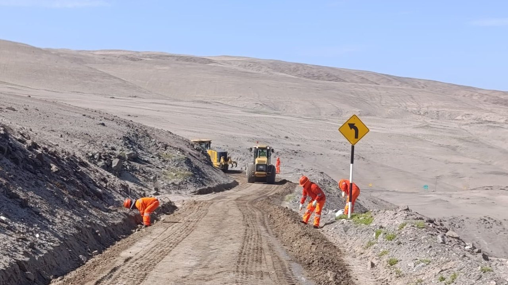

Gérard Depardieu ha admitido la condena a 18 meses de cárcel por dos agresiones sexuales cometidas durante un rodaje en 2021, y ha pedido disculpas a "quienes hayan podido sufrir".



Gérard Depardieu ha admitido la condena a 18 meses de cárcel por dos agresiones sexuales cometidas durante un rodaje en 2021, y ha pedido disculpas a "quienes hayan podido sufrir".
Un farmacéutico explica cuáles son los riesgos, qué infecciones pueden aparecer y qué medidas conviene adoptar para evitar problemas de salud. Prestar una toalla a un familiar, pareja o compañero de vivienda puede parecer una costumbre sin mayores consecuencias, pero este hábito merece atención.
El veterano delantero francés Antoine Griezmann recibió este martes el galardón a la mejor contratación del año en la liga norteamericana (MLS), un reconocimiento obtenido con apenas media temporada disputada.
La antigua carretera Panamericana Sur será recuperada para funcionar como ruta alterna en el distrito de Atico, provincia de Caravelí, ante constantes derrumbes a causa de lloviznas.
Más de mil millones de niños sufren algún tipo de violencia cada año en todo el mundo, advirtió la Organización Mundial de la Salud (OMS), que instó a los gobiernos a acelerar sus compromisos para prevenir las agresiones y garantizar la atención de las víctimas.
Este martes, el corte de agua programado en Lima continuará afectando a diversas zonas como parte del plan de mantenimiento del sistema de almacenamiento.
A mitad de la reorganización, al día 45, el OECE tendrá un diagnóstico profundo que será base para tomar decisiones en el corto, mediano y largo plazo, indicó Gaviño.
La iniciativa, denominada «Open AI para Chile», forma parte del programa internacional Open AI for Countries y busca fortalecer las capacidades tecnológicas del Estado, capacitar a funcionarios y explorar soluciones que permitan mejorar los servicios entregados a la ciudadanía.
Están todos los países del sudeste asiático, Estados Unidos y todo el Pacífico”, manifestó. Los jefes de Estado deciden el camino del mundo y en este momento es muy importante su presencia en APEC ”, señaló. Cronograma de pagos 2026 de sueldos en el Estado peruano??
Cada edición dura menos de dos minutos. En la web tienes el resumen de cada historia y el enlace directo al medio original para leerla completa.
Conoce Olfatecho →